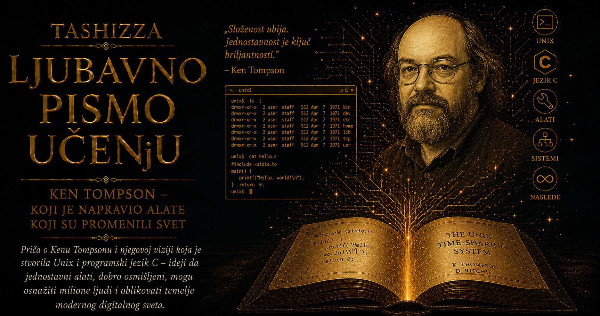

Ljubavno pismo učenju

Krajem šezdesetih godina računar je uglavnom pripadao ustanovi koja ga je posedovala, dok je čovek pred njim bio tek jedan od brojnih korisnika čije je vreme moralo biti pažljivo raspoređeno. Velike mašine zauzimale su posebne prostorije, programi su često stizali do njih na bušenim karticama, a između zamišljene naredbe i dobijenog rezultata moglo je proći dovoljno vremena da se prekine misaoni tok iz kojeg je program nastao. Razvoj sistema sa deljenjem vremena počeo je da menja taj odnos, jer je više ljudi preko terminala moglo istovremeno da koristi isti računar, neposredno pokreće programe i brzo ispravlja greške. Interaktivno računarstvo obećavalo je življi savez između čoveka i mašine, ali su prvi veliki pokušaji njegovog ostvarivanja donosili i ogromnu složenost.
Najambiciozniji među njima bio je Multics, zajednički projekat Masačusetskog tehnološkog instituta, kompanije General Electric i Bellovih laboratorija. Njegovi tvorci zamišljali su pouzdan računarski servis koji će velikom broju korisnika pružati trajno dostupnu infrastrukturu, nalik električnoj ili telefonskoj mreži. Multics je razvio značajne ideje o zaštiti podataka, hijerarhijskim datotekama, deljenju procesorskog vremena i organizaciji velikih sistema, ali su širina zamisli, zahtevan hardver i složena koordinacija usporavali njegovo ostvarivanje. Kada se Bell Labs 1969. godine povukao iz projekta, njegovi istraživači izgubili su okruženje koje im je omogućavalo neposredan i zajednički rad, ali su iz njega poneli iskustvo iz kojeg će nastati drugačiji odgovor na isti problem.
Ken Thompson je među prvima prepoznao da se veličina sistema ne mora meriti brojem njegovih mogućnosti, već skladom nekoliko pažljivo izabranih načela. Na zapostavljenom računaru PDP-7 počeo je da razvija okruženje dovoljno malo da ga jedan čovek može razumeti, a dovoljno sposobno da postane svakodnevni prostor za programiranje. Neposredan povod pružio mu je program Space Travel, simulacija kretanja kroz Sunčev sistem koju je želeo da prenese sa druge mašine. Da bi je pokrenuo, morao je da napiše aritmetičke postupke, grafičke rutine, alate za pronalaženje grešaka i načine upravljanja podacima. Oko tih praktičnih potreba počelo je da se oblikuje jezgro novog operativnog sistema.
Thompsonova jednostavnost bila je plod dubokog razumevanja, a ne odricanja od moći. Zahtevala je da svaka osnovna ideja bude dovoljno jasna da se može povezati sa drugima bez mnoštva posebnih pravila i izuzetaka. Novi sistem dobio je hijerarhijski datotečni sistem, procese za izvršavanje programa, komandni interpreter i skup alata namenjenih svakodnevnom radu. Programer je mogao da napiše naredbu, odmah vidi rezultat, prepravi kod i ponovo ga pokrene, pa je računar postajao prostor neprekidnog razgovora između zamisli i njenog izvršenja. Upravo je taj kratki krug pokušaja, odgovora i ispravke stvarao uslove za slobodnije istraživanje.
Posebna snaga Unixa nalazila se u doslednosti njegovih apstrakcija. Datoteka je predstavljena kao niz bajtova koji program može da čita ili zapisuje bez potrebe da poznaje unutrašnju građu uređaja na kojem se podaci nalaze. Terminali i pojedini uređaji mogli su da se koriste preko operacija srodnih radu sa običnim datotekama, čime je smanjen broj posebnih slučajeva koje programer mora da pamti. Kada različiti resursi prihvataju sličan skup operacija, programi postaju pregledniji, prenosiviji i spremniji za povezivanje na načine koje njihovi prvi tvorci nisu morali unapred da predvide.
Oko novog sistema ubrzo se okupila izuzetna zajednica istraživača Bellovih laboratorija. Dennis Ritchie razvio je jezik C, koji će omogućiti da Unix preraste granice prvobitnog hardvera, dok su Douglas McIlroy, Joe Ossanna, Rudd Canaday, Brian Kernighan, Bob Morris i drugi unosili sopstvene ideje, zahteve i alate. Thompson je bio pokretačka snaga prvih verzija sistema, ali je Unix sazrevao među ljudima koji su istovremeno bili njegovi tvorci i korisnici. Oni su u njemu pisali programe, pripremali dokumente, istraživali algoritme i međusobno razmenjivali rezultate, pa je svaka prepreka u svakodnevnom radu mogla postati povod za novo, pažljivo odmereno poboljšanje.
Iz takvog okruženja izraslo je načelo da dobar alat treba da obavlja jasno određen posao i da svoj rezultat predaje drugom alatu u obliku koji ovaj može lako da prihvati. Umesto jednog velikog programa koji pokušava da predvidi sve buduće potrebe, sistem je nudio mnoštvo manjih programa za pretraživanje, sortiranje, brojanje, menjanje i prikazivanje podataka. Svaki od njih imao je ograničenu odgovornost, ali se prava moć pojavljivala u njihovim kombinacijama. Korisnik više nije zavisio isključivo od unapred pripremljenih aplikacija, jer je od raspoloživih elemenata mogao da sastavlja sopstvene postupke.
Douglas McIlroy dugo je zastupao zamisao o neposrednom povezivanju programa, a Thompson ju je 1973. godine pretočio u Unixov mehanizam cevi, predstavljen znakom | u komandnoj liniji. Izlaz jednog programa mogao je odmah da postane ulaz drugog, bez niza pomoćnih datoteka i bez potrebe da programi poznaju unutrašnju građu svojih suseda. Jedna komanda mogla je da izdvoji određene redove, druga da ih sortira, treća da ih prebroji, dok je korisnik od jednostavnih i proverljivih koraka sastavljao složeniji odgovor. Time je programiranje dobilo oblik izražavanja u kojem snaga nastaje iz odnosa među malim delovima.
Thompson je napisao veliki deo prvobitnog datotečnog sistema, mehanizama za upravljanje procesima, komandni interpreter poznat kao Thompson shell, uređivač ed, brojne osnovne komande i programski jezik B. Iza tih različitih doprinosa stajalo je isto osećanje za meru: mehanizam mora dovoljno da doprinosi celini da bi opravdao složenost koju uvodi. Kratak program za njega nije bio vredan samo zbog manjeg broja redova, već zbog mogućnosti da ga čovek obuhvati mišlju, proveri njegovo ponašanje i pouzdano ga ugradi u veći sistem.
Prve verzije Unixa bile su napisane u asembleru i zato snažno vezane za određenu vrstu računara. Dennis Ritchie je razvojem jezika C stvorio sredstvo kojim je to ograničenje moglo biti prevaziđeno, a Thompson je sa njim 1973. godine učestvovao u ponovnom pisanju najvećeg dela sistema. Unix je tako postao jedan od prvih operativnih sistema uspešno napisanih pretežno u jeziku višeg nivoa. Pri preseljenju na novu arhitekturu više nije bilo potrebno iznova graditi čitav sistem, jer je veliki deo izvornog koda mogao da ostane isti, dok su se prilagođavali samo slojevi neposredno povezani sa hardverom.
Prenosivost je omogućila Unixu da opstane kroz generacije procesora koje njegovi tvorci nisu mogli predvideti. Istovremeno je oslabila staru vezu između softvera i jednog proizvođača, jer su programi, znanje i radne navike mogli da se prenose sa jedne mašine na drugu. Ritchiejev C dao je tom preseljenju jezik, dok je Thompsonov Unix pružio arhitektonsku celinu vrednu prenošenja. Njihovi doprinosi ovde se dodiruju, ali se razlikuju po središtu: Ritchie je izgradio prenosivi jezik sistemskog programiranja, a Thompson okruženje čiji su procesi, datoteke i mali alati pokazali šta takva prenosivost može da omogući.
Unix se iz Bellovih laboratorija širio neuobičajenim putem. Zbog regulatornog položaja kompanije AT&T, sistem u početku nije mogao da bude razvijan kao običan komercijalni proizvod, pa je pod licencama stizao do univerziteta i istraživačkih ustanova, često zajedno sa izvornim kodom. Profesori i studenti mogli su da proučavaju stvarni operativni sistem, menjaju njegove delove, prenose ga na druge računare i razvijaju sopstvene alate. Izvorni kod je postao nastavni materijal i zajednički jezik generacija sistemskih programera, što je Unixu dalo obrazovni uticaj daleko veći od njegove prvobitne laboratorijske namene.
Univerzitet Kalifornije u Berkeleyju postao je jedno od najvažnijih središta tog razvoja. Tamošnja zajednica stvorila je Berkeley Software Distribution i Unixovom nasleđu dodala uređivače, razvojne alate, virtuelnu memoriju i mrežne mogućnosti. Iz berklijske grane potekle su uticajne implementacije protokola TCP/IP i interfejs soketa preko kojeg programi uspostavljaju mrežne veze. Thompsonova arhitektura pokazala se dovoljno stabilnom da primi doprinose koje prvobitni tim nije planirao i dovoljno otvorenom da ti doprinosi promene način na koji računari međusobno razgovaraju.
Kasniji rast doneo je brojne komercijalne varijante, neusklađene dodatke i takozvane Unix ratove, tokom kojih su tehnička srodnost sistema i prvobitna kultura saradnje često potiskivane tržišnim interesima. Razvoj standarda POSIX pokušao je da sačuva zajednički skup programskih interfejsa i ponašanja na koja aplikacije mogu da se oslone. Time je Unixova ideja prenosivosti opstala čak i onda kada se njegove grane više nisu razvijale kao jedinstvena porodica. Jednostavna pravila pokazala su svoju punu vrednost upravo u svetu koji je postajao sve razuđeniji.
Thompson je istovremeno razumeo da otvorenost izvornog koda sama po sebi ne uklanja sve razloge za nepoverenje. U predavanju povodom Tjuringove nagrade pokazao je kako izmenjeni kompajler može neprimetno da ubaci skrivenu slabost u drugi program, a zatim da je prenosi u buduće verzije samog kompajlera i kada sumnjive naredbe više nema u njegovom vidljivom izvornom kodu. Njegov ogled, poznat pod nazivom „trusting trust”, otkrio je da provera mora obuhvatiti čitav lanac nastanka softvera: izvorni kod, prevodioce, biblioteke, postupak izgradnje, hardver i ljude kojima je povereno njihovo održavanje.
Unix je tokom vremena postao jedan od glavnih intelektualnih predaka Linuxa, BSD sistema i brojnih drugih platformi, dok se njegovi tragovi prepoznaju u macOS-u, iOS-u, Androidu, serverima, superračunarima, mrežnoj infrastrukturi i računarstvu u oblaku. Terminal, komandni interpreter, direktorijumske putanje, standardni ulaz i izlaz, procesi, dozvole nad datotekama i skripte koje automatizuju složene postupke pripadaju istom misaonom nasleđu. I kada savremeni programer ne koristi originalni Unix, često radi unutar sveta čiju je gramatiku taj sistem pomogao da oblikuje.
Thompson je kasnije učestvovao u razvoju sistema Plan 9, kodiranja UTF-8 i programskog jezika Go, nastavljajući potragu za apstrakcijama koje ostaju jasne i u novim tehničkim okolnostima. Njegova filozofija jednostavnosti zato ne pripada samo jednoj epohi sporih terminala i skromne memorije. Ona podseća da svaki dodatni sloj donosi cenu, da razumljivost predstavlja oblik pouzdanosti i da sistem najduže traje kada ljudima pruža nekoliko stabilnih elemenata od kojih mogu stvarati ono što njegovi prvi graditelji nisu umeli da predvide.
Najveći Thompsonov doprinos može se prepoznati u zamisli računara kao alata za dalje stvaranje alata. Unix nije korisnika zatvarao u jednu unapred određenu proceduru, već mu je pružao delove koje može razumeti, povezivati i preuređivati. Takva arhitektura ukazivala je poverenje ljudskoj domišljatosti. Njena jednostavnost nije sužavala prostor budućnosti, nego ga je čuvala otvorenim, ostavljajući narednim generacijama dovoljno slobode da od malih i pouzdanih elemenata izgrade svet daleko veći od onoga koji je mogao stati u laboratoriju krajem šezdesetih godina.